Теория вероятности
Экзаменационная программа про курсу Теория Вероятности:
-
1. Достоверное, невозможное и случайное события. Частота и вероятность.
Достоверное событие - событие А, которое неизбежно происходит при каждом выполнении условий. (Его вероятность стремится к 1)
Невозможное событие - событие А, которое не может произойти заведомо при комплексе условий. (Его вероятность стремится к 0)
Случайное событие - событие А, которое при реализации комплекса условий может произойти, а может и не произойти.
Случайными событиями являются:
- Выпадение ребра при подбрасывании монеты.
- Результаты различных измерений
Более объективной характеристикой случайного события А является частота h(n, A):
\(h(n, A) = \frac{nA}{n}\)
где
\(nA\) - количество экспериментов, приведших к А
\(n\) - количество всех экспериментов.-
что то про это
Экспериментально установлено, что для многих событий при увеличении n становится почти постоянной.
Это свойство называют статистической устойчивостью ЧАСТОТ случайного события.Т.о., с каждым событием А можно связать некоторое число Р(А), с которым сближается h(n, A), и называть Р(А) вероятностью события А.
Т.е., строим числовой ряд Аn:
ai = h(i, A)
P(A) = lim{n->00}(h(n, A))Частоты обладают следующими свойствами:
0 <= h(n, A) <= 1, Y n, A
h(n, Достоверное) = 1
h(n, Невозможное) = 0
0 < h(n, Случайное) < 1События можно складывать/вычитать (сложение == происходит и то, и то; вычитание == просиходит уменьшаемое, не происходит вычитаемое)
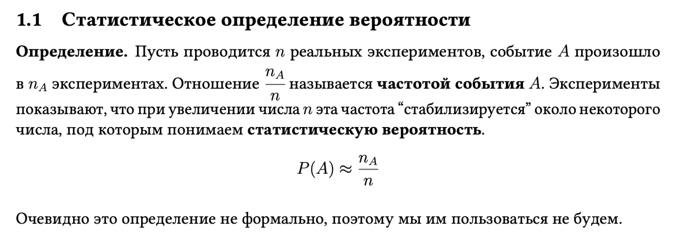
-
2. Пространство элементарных событий.
Пространство элементарных исходов/событий\(\Omega\) (Омега) - множество, содержащее все возможные результаты данного эксперимента, из которых в эксперименте происходит только один.
\(\Omega = \{ \omega_1, \omega_2, \cdots, \omega_n\} \\ \omega_1, \omega_2, \cdots, \omega_n \in \Omega\)
Пример: игральная кость. Когда мы её подбрасываем, выпадает какая-то одна из шести граней. Таким образом, для игральной кости пространством элементарных исходов будет множество из шести элементов, где каждый элемент — число очков на выпавшей грани
-
3. Алгебра событий.
-
Суммой 2-х событий \(A+B=A \cup B\) называется событие состоящее из всех элементарных событий A и B.
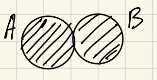
-
Произведением \(A*B = A\cap B\) называется событие состоящее из элементарных событий принадлежащих A и B одновременно.
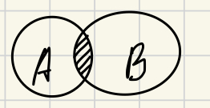
-
Разностью \(A-B\) называется событие, состоящее из. элементом множества A, но не принадлежащих B
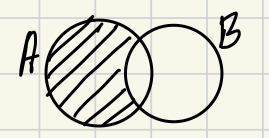
-
\(\bar A = \Omega \setminus A\) - называется противоположным события A ⇒ \(\Omega = A + \bar A\)
-
Событие A и B называется несовместостные, если их пересечение (произведение) является пустым множеством
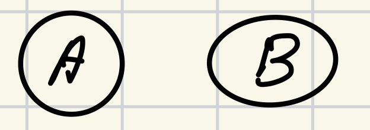
Тот факт, что событие A является подмножеством события B, что означает \(A\sub B\)⇒ из наступления события А следует событие B
-
Если \(A \in B\) или A является подмножеством B и наоборот, то A и B - эквивалентны друг другу \(A = B\)
Понятие произведения и суммы¶
Событие \(A_1+ A_2+A_3+...+A_n+...= \bigcup_{n=1}^\infty A_n\) состоит из элементарных событий принадлежащих хотя бы одному \(A_n\)
Событие \(A_1*A_2*A_3*...*A_n*...=\bigcap_{n=1}^\infty A_n\) состоит из элементарных событий принадлежащих всем одновременно \(A_n\)
Понятие сигма алгебры¶
\(\mathbb{A}\) - некоторый класс подмножества \(\Omega\).
Класс подможества назыв алгебра событий, если для любого события A или B
\(\forall A \in \mathbb{A}, \forall B \in \mathbb{A}\) ⇒ \(AB \in \mathbb{A} \space ,\space A+B \in \mathbb{A} \space , \space A \setminus B \in \mathbb{A}\) -
-
4. Классическое определение вероятности. Свойство вероятности.
Классическое определение вероятности сводит понятие вероятности к понятию равновероятности (равновозможности).
Предположим теперь, что рассматривается такое испытание, где исходы равновероятные, \(E_1, E_2, E_3,...,E_n\). Предположим, что данные события образуют полное событие ⇒ то есть их сумма есть достоверное событие:
1) \(E_1 + E_2 +...+E_n = U, P(U)=1\)
\(P(E_1+E_2+...+E_n)=P(E_1)+P(E_2)+...+P(E_n)=P(U)=1\)2) \(E_i \cap E_j = \varnothing, \; i \neq j\)
Если некоторое событие А может быть представлено как сумма m слагаемых:
\(A = E_1 +E_2+...+E_m\)
\(P(A)=P(E_1)+P(E_2)+...P(E_m)=m*p=m/n\)Классическое определение вероятности¶
Вероятность события \(A\) есть отношение числа \(m\) благоприятных исходов к общему числу \(n\) всех возможных равновозможных исходов.
Свойство вероятности \(P(A)\)¶
-
Для любого события A диапазон [0;1]
\(\forall A : 0 \leq P(A) \leq 1\) 2. \(U: P(U) = 1\) 3. Для невозможного события \(V\) вероятность равна 0
\(V: P(V)=0\) 4. Если событие А состоит из двух несовместных событий
\(A = B+C\) 5. Вероятность противоположного события
\(P(\bar A)=1-P(A)\) 6. Если А - подможество B, то
\(A\sub B : P(A) \sub P(B)\)
Классическое определение вероятности¶
🎲 Пусть имеется пространство \(\Omega = \{\omega_1, \omega_2, \cdots, \omega_n\}\)
- \(\Omega\)- конечное, \(|\Omega| = n \in \N\)
- \(\forall i \in \overline{1, n}, \quad w_i\) - равновозможны
- Все подмножества \(\Omega\) являются событиями
Тогда \(p_i = \frac{1}{n}\), а вероятностью события \(A\) будет являться \(\frac{|A|}{n}\)
Можно отметить следующие недостатки классического определения:
- Исходы не всегда равновозможны
- Исходов может быть бесконечное число
- 5. Аксиоматика в теории вероятности
Числовая функция Р определена на алгебре событий А, если выполняются следующие аксиомы:
1) Аксиома отрицательности P(A) > 0
2) Аксиома нормированности \(P(\Omega) = 1\);
3) Аксиома аддитивности. Если P(A) и P(B) несовместны, то P(A+B) = P(A) + P(B)
4) Расширенная аксиома аддитивности.
\(A_1, A_2, A_3, \dots, A_n\)
\(A_i \cap A_j = \varnothing, \; i \neq j\)
\(\bigcup_{n=1}^N A_n = A \subset \mathcal{A} \implies P(A) = \sum_{n=1}^N P(A_n)\)Тройку (\(\Omega , A, P\)) в которой P удовлетворяет аксиомам 1-4 называют вероятностным пространством и дает самую общую математическую модель случайных событий.
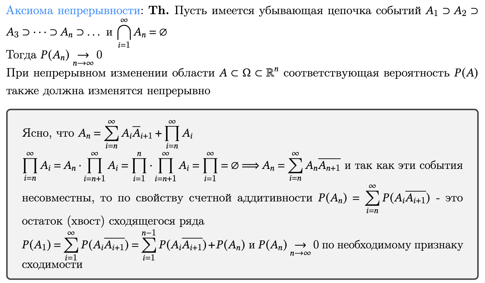
-
-
6. Комбинаторные формулы.
Путь имеется конечное множество \(\{a_1, a_2, a_3,...,a_n\}\) из \(n\) элементов. Из этого множества можно образовать различные НАБОРЫ.
Упорядоченные наборы называются размещениями.
\((1,2),(2,1),(1,3),(3,1),(2,1),(3,2)\)Неупорядоченные наборы называются сочетаниями.
\((1,2),(1,3),(2,3)\)Размещение из \(m\) по \(n\) элементов называют перестановками.
Число размещений, которое можно образовать выбирая различными способами из \(n\) по \(m\) - \(A_n^m = n^{[n]} = n(n-1)...(n-m+1)\)
Число сочетаний, из \(n\) по \(m\) - \(C^m_n = \frac{n^{[m]}}{m!}\)
Часто полезны формулы: \(C^m_n= \frac{n!}{n!(n-m)!} = C^{n-m}_n\)
-
Комбинаторные формулы со времен дискретки
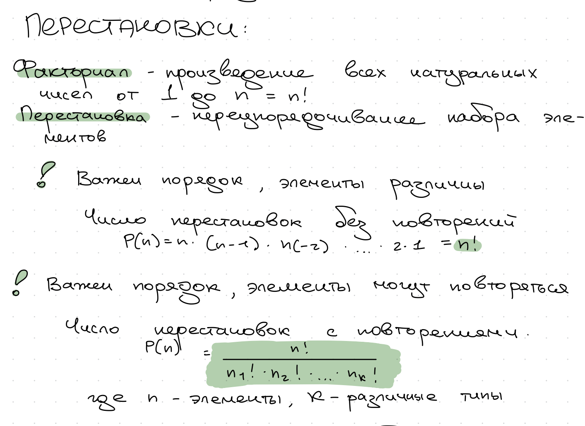
-
Пример
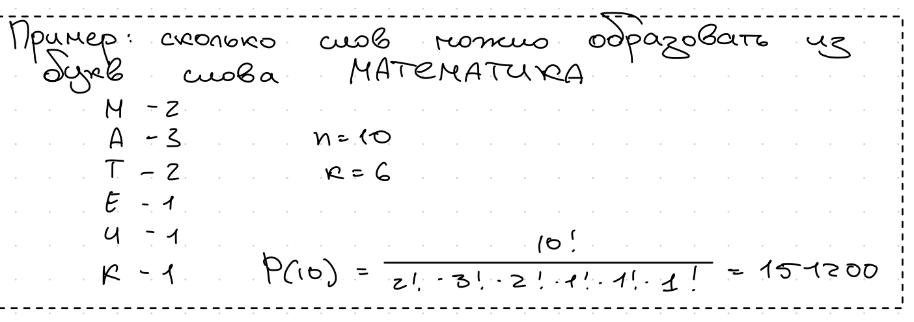
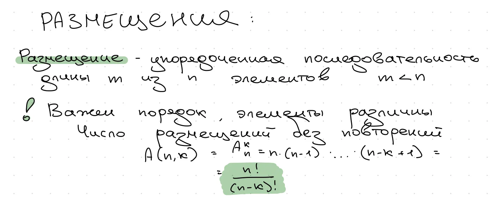
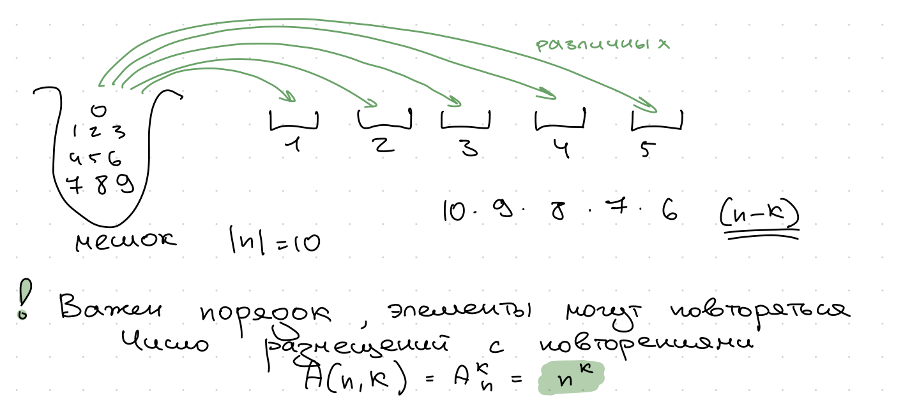
-
Пример
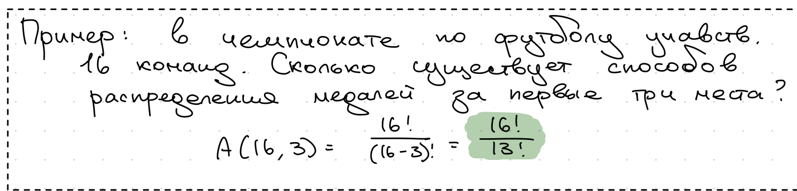
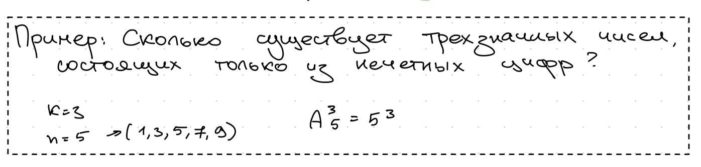
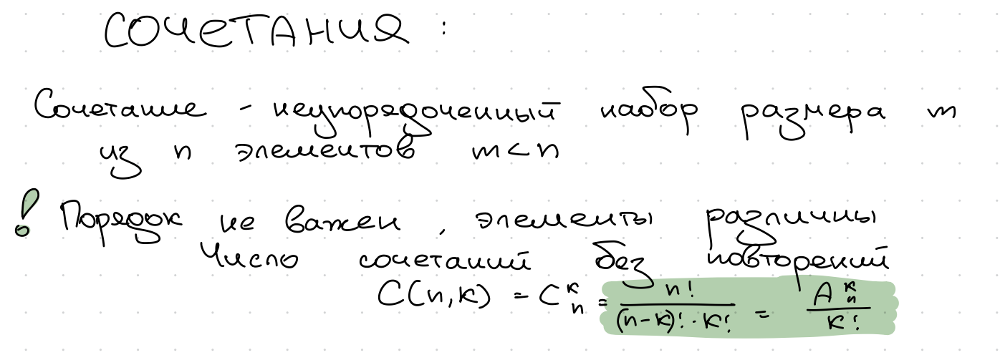
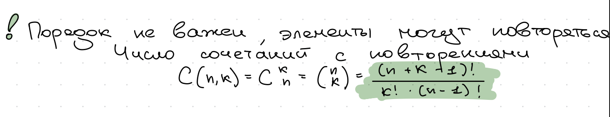
-
Пример
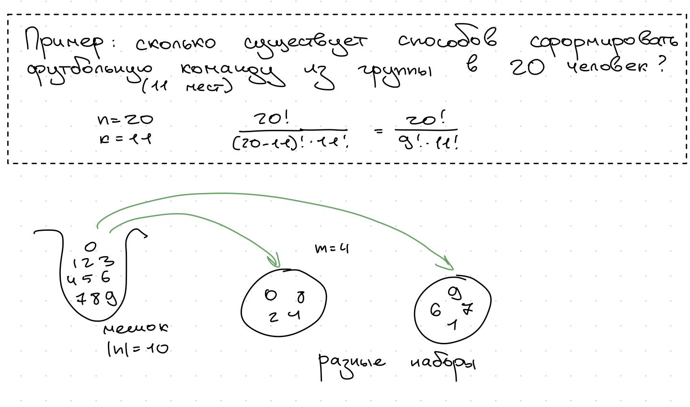
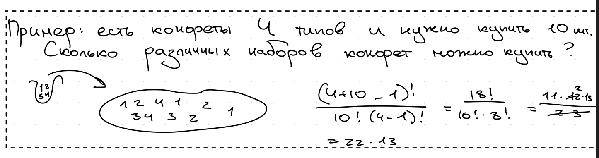
-

-
-
7. Условные вероятности. Свойство условной вероятности.
Условные вероятности¶
Условная вероятность \(P(A/B)\) - вероятность события \(А\), вычисленная в предположении, что событие B уже произошло.
\(P(A/B)= \frac{P(AB)}{P(B)}; P(B) > 0\)
Пусть число \(P(B) > 0\), число \(P(A/B)\) определяемое равенством \(\frac{P(AB)}{P(B)}\) называется условной вероятностью при условии \(B\)
Свойства условной вероятности¶
[!important] Если 2 события не являются не зависимыми и если известно, что одно из них произошло, то на основе этого мы можем уточнить вероятность другого события. Вероятность данного события - условная \(\underline{P}(A/B) = P_B(A)\)
Условная вероятность обладает теми же свойствами, что и безусловная вероятность.
Свойства:- \(0 \leq P(A/B) \leq 1; \ 0\leq \frac{P(AB)}{P(B)} \leq 1\)
- \(P(A/B) \leq P(C/B)\) если \(A \sub C\); \(\frac{P(AB)}{P(B)} \leq \frac{P(CB)}{P(B)}\)
- \(P(A/B) = 1\) если А - достоверное событие ⇒ \(AB = B;\ P(A/B) = \frac{P(AB)}{P(B)} = \frac{P(B)}{P(B)} = 1\)
- \(P(C/B)=0\) если С - невозможное событие ⇒ \(CB\) - невозможное событие
- \(P(A\cup C/B) = P(A/B) + P(C/B)\) \(\leftrightarrow\) если A и С несовместны поскольку в таком случае AB,CB - несовместны и по-этому по правилу сложения, для безусловных вероятностей будем иметь
\(P(A\cup C/B) = \frac{P(A\cup C)B}{P(B)}= \frac{P(AB\cup CB)}{P(B)} = \frac{P(AB)}{P(B)} + \frac{P(CB)}{P(B)} = P(A/B) + P(C/B)\)
- \(P(A\cup C/B) = P(A/B) + P(C/B) - P(AC/B)\) - если A и C совместные
[!important] Замечание
Если бы мы просто складывали вероятности \(P(A)\) и \(P(B)\), то получилось бы, что элементарные исходы составляющие \(P(AB)\) мы учли бы дважды . По-этому только один раз мы их вычли обратно.-
Пример
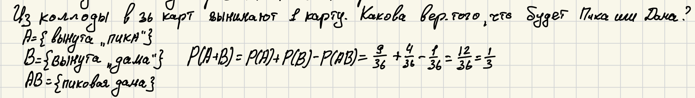
-
\(P(\bar A/B) = 1 - P(A/B)\)
\(P(\bar A/B) + P(A/B) = 1\)
\(P((\bar A + A )/ B) = 1\)
\(\bar AB, \ AB\) - несовместные
\(\bar A, \ A\) - несовместные
-
8. Независимость случайных событий.
Событие A и B называется независимыми, если \(P(AB) = P(A) * P(B)\)
События \(A_1, A_2, A_3, ..., A_n\) будем называть взаимнонезависимыми если для любых \(\forall 1\leq i_1 \leq i_2 \leq i_3 \leq...\leq i_n\) имеет место следующая формула
\(P(A_{i_1} * A_{i_2} * A_{i_3} * ... * A_{i_n}= P(A_{i_1}) * P(A_{i_2}) * P(A_{i_3}) *... P(A_{i_n})\)[!important] Замечание
Если написанное равенство выполненое при \(k=2\), то событие в этом случае попарно-независимое
-
9. Формула полной вероятности.
События \(H_1, H_2,...,H_n\) образуют полную группу событий, если они попарно несовместны и содержат все возможные элементарные исходы
- Их сумма есть достоверное событие \(H_1, H_2,...,H_n = \Omega\)
- \(H_i \cap H_j = \empty; \ i \not= j;\ i,j \not=...\)
Формула полной вероятности¶
\(P(A) = \sum_{k=1}^n P(H_k)*P(A\setminus H_k)\)
То есть, вероятность события А есть сумма произведений вероятостей каждой гипотезы на условную вероятность события А.
-
Доказательство формулы полной вероятности
Событие A может произойти только одновременно с некоторым из событий, так как эти события (гипотезы) образуют полную группу событий.
\(A = AH_1 \cup AH_2 \cup AH_3\cup ... \cup AH_n\)
Теперь мы видим, что события попарно не пересекаются, так как гипотезы \(H_1, H_2..., H_n\) попарно несовместны, то применима аксиома сложения вероятностей \(P(A) = \sum_{k=1}^n P(AH_k)\)
Применим к \(P(AH_k)\) правила умножения, с учетом условной вероятности. В результате получим формулу
\(P(A) = P(\Omega *A)= \\ P((H_1+H_2+...H_n)A)=P(H_1A+H_2A+...+H_nA)=\\ P(H_1A)+P(H_2A)+...+P(H_nA)=\\ P(H_1)P(A\setminus H_1)+P(H_2)P(A\setminus H_2)+...+P(H_n)P(A\setminus H_n)=\\ \sum_{k=1}^n P(H_k)*P(A\setminus H_k)\) -
Пример
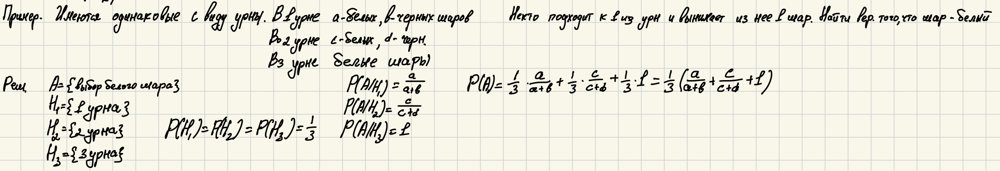

-
10. Формула Байеса.
Пусть \(H_1, H_2, ...,H_n\) - полная группа случайных событий, А - некоторое событие, для которого \(P(A) \not= 0\).
\(P(H_k/A)= \frac{P(H_k)P(A/H_k)}{\sum_{i=1}^k P(H_k)P(A/H_k)}\)
[!important] Замечание
Формула полной вероятности часто называется априорной формулой-
Доказательство формулы Байеса
Рассмотрим левую часть формулы Байeса
\(P(H_k/A) = \frac{P(H_k*A)}{P(A)}\)
- \(P(H_kA) = P(H_k)P(A/H_k)\) - формула произведения
- \(P(A)=\sum_{i=1}^k P(H_i)P(A/H_i)\) - формула полной вероятности
- Пример
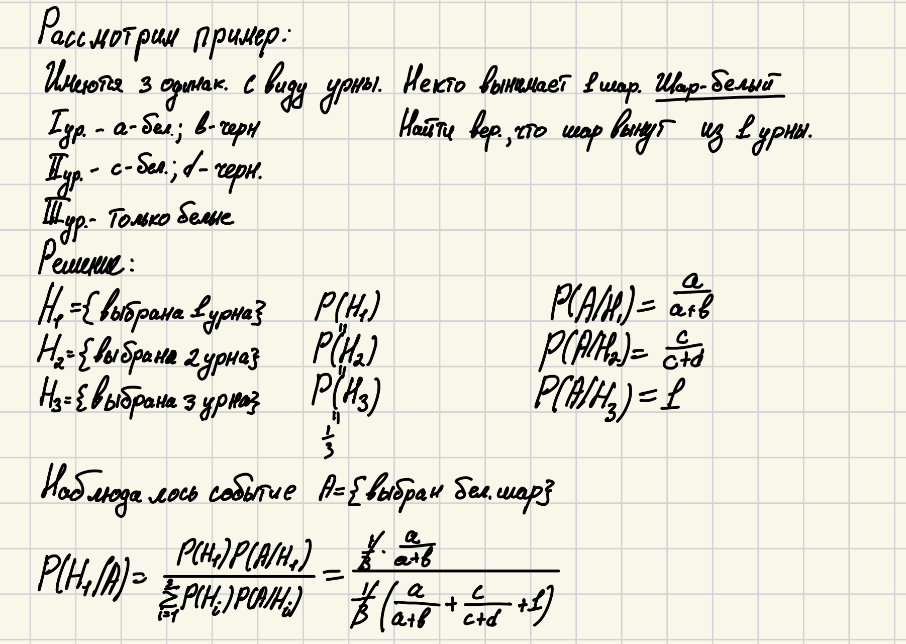

-
-
11. Последовательность независимых испытаний Бернулли. Формула Бернулли.(Общее определение последовательности испытаний, предельные теоремы в схеме Бернулли)
Испытанием (наблюдением, экспериментом) называют совокупность определенных условий, при которых могут осуществится различные исходы. В результате каждого испытания появляется одно из нескольких попарно несовместных событий, которые называются исходами. Например, испытание в контроле готового изделия может окончиться 2-мя исходами. Либо годно, либо дефектным.
-
Описание теоретико-вероятностностной модели
Пусть в каждом испытании может наступить один из \(r\) исходов и событие связанное с различными испытаниями являются независимыми. Результат n испытаний можно записать в виде цепочки \(x_1, x_2, x_3, ..., x_n\), где \(x_k\) - исход \(k\)-го испытания. За множество \(\Omega\) можно принять множенство всех возможных цепочек \(\omega = \{x_1, x_2,.. ,x_n\} \\ \Omega = \{ \omega \} \\ x_k \in \{ 1,2,...,r\} \\ k \in [1,n]\)
Событием \(A_{x_k=j}(k) = \{ в\ каком-то \ испытании \ наступил \ исход \ i\}\) это событие теперь можно выразить через элементарное событие как:
\(A_i(k) = A_{x_k=i}(k)=\{ \omega =(x_1, x_2, ...,x_n):x_k = i; k= \bar{1,n}; i=\bar{1,r} \}\)С другой стороны \(\omega = (x_1, x_2, ..., x_n)\) можно представить как произведение случайных событий \(A_{x_k = i}(k)\):
\(\omega = (x_1, x_2, ... ,x_n) = A_{x_k=i}(1)*A_{x_k=i}(2)*...*A_{x_k=i}(n)\)
Элементарные вероятности \(p(\omega)\) для независимых случайных событий определяются, в данном случае, равенством.
\(p(\omega) = p_{x_1}p_{x_2}p_{x_3}*...*p_{x_n}\), где вероятности исходов отдельных испытаний \(P_i = P_{x_k=i} = P(A_i(k))\\ k = [1, k] \\ r = [1, r]\) удовлетворяет условию, где вероятность исходов удовлетворяет условию \(p_i \geq 0, \ i=[1,r], \ \sum_{i=1}^r p_i = 1\)
Последовательностью независимых испытаний называются конечная - вероятностная схема, в которой вероятность элементарных событий определена по формуле \(p(\omega) = p_{x_1}p_{x_2}p_{x_3}*...*p_{x_n}\) как произведение вероятности исходов определенных испытаний. Последовательность независимых испытаний иногда называют схемой независимых испытаний или полиномиальной схемой.
Часто приходится рассматривать последовательности исходов с 2-мя исходами: изделие годно или дефектно, лотырейный билет победный или нет и так далее; только одним исходом на
Частный случай схемы независимых испытаний, в котором каждое испытание имеет два возможных исхода (например, успех или неудача), называется схемой Бернулли.
Обычно, исходы называются “успехом” или “неудачей”, а их вероятности обозначают как \(p\) и \(q = 1 - p\).
В схеме Бернулли с \(n\) испытаниями имеем \(\Omega = \{ \omega \}\). \(\omega = \{ x_1, x_2, ,...,x_n \}; \ x_k = \{ 1, 0 \}; \ k = \{ 1,...,n \}\)
Очевидно, что число успехов \(m\) (или число единиц) в цепочке \(\omega = \{ x_1, x_2, ...,x_n \}\) сумма: \(x_1 + x_2 + x_3 + ... + x_n = m\)
Элементарные вероятности определяются по формуле \(p(\omega) = p_{x_1}p_{x_2}p_{x_3}*...*p_{x_n}\) для схемы Бернулли будут \(p(\omega) = p^{x_1 + x_2 + ... + x_n} * q^{n-x_1 + x_2 + ... + x_n} = p^m * q^{n-m}\)
Для схемы Бернулли часто представляет интерес следующее событие: в n испытаниях наступило ровно m успехов \(B_m = \{ n,m \}\)
[!important] Теорема Бернулли
Вероятность \(P(B_m)\) того, что \(b_n\) испытаний схемы Бернулли наступило ровно m успехов определяется формулой Бернулли: \(P(B_m) = C_n^m * p^m *q^{n-m}\), где p - вероятность успеха в каждом отдельном испытании.
-
Доказательство Теоремы Бернулли
Событие \(B_m\) определяется как \(\Omega : B_m = \{ \omega = (x_1, x_2, ..., x_n ): x_1 + x_2 + ... + x_n = m \}\) следовательно \(P(B_m) = \sum_{\omega \in B_m} P(\omega)\). Так как согласно формуле \(p(\omega) = p^m * q^{n-m}\), \(\forall \omega \in B_m\) , то для вычисления вероятности \(P(B_m)\) осталось определить число P(Bm) элементарных событий входящих в B_m.
Число |Bm| (не абсолютная велечина, это просто число элементарных событий) совпадает с числом способов выбора m мест для единицы в цепочке \(\omega\) (Число сочетаний), так как оставшиеся места однозначно заполняются нулями ⇒ \(|B_m| = C_n^m\) и тогда мы получаем формулу Бернулли \(P(B_m) = C_n^m * p^m * q^{n-m}\).
-
Доказательство Теоремы Бернулли с neerc.itmo
Событие \({A=v_n=k}\) означает, что в n испытаниях схемы Бернулли произошло ровно k успехов. Рассмотрим один элементарный исход из события A: когда первые k испытаний завершились успехом, остальные неудачей. Поскольку испытания независимы, вероятность такого элементарного исхода равна \(p^k⋅(1−p)^{n−k}\)Другие элементарные исходы из события A отличаются лишь расположением \(k\) успехов на \(n\) местах. Есть ровно \(\binom{n}{k}\) способов расположить k успехов\(\binom{n}{k}\) а \(n\) местах. Поэтому событие A состоит из (E элементарных исходов, вероятность каждого из которых равна \(p^k⋅q^{n−k}\)
Набор вероятностей в теореме называется биномиальным распределением вероятностей.
-
Примеры
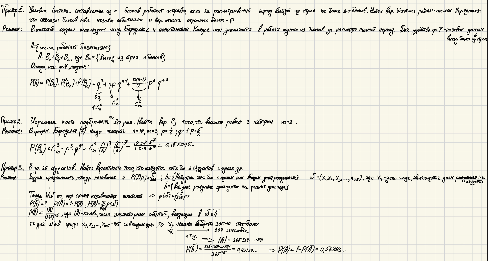
Общее определение последовательности испытаний¶
-
Введение
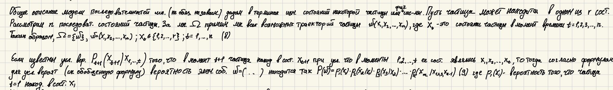
Конечная вероятностная схема, в которой множество \(\Omega\) определено равенством \(\Omega = \{ \omega \}, \omega = (x_1, x_2, ..., x_n); \ x_5 \in \{ 1,2,...,r\}; \ t=1,...,n\), а элемент вероятности определен формулой \(P(\omega) = p_1(x_1)*p_2(x_2/x_1)*p_3(x_3/x_2)*...*p_n(x_m/x_{1,2,3}x_n\) называется последовательностью n испытаний с r исходами.
Общая схема испытаний в качестве частного случая содержит схему независимых испытаний \(P_t(x_t/x_{1,...}x_{t-1})=P_t(x_t); \ t=[1,n]\)
Отметим в заключении другой частный случай общей сххемы последовательности испытаний. Если \(P_t(x_t/x_1...x_{t-1})\) зависят только от результата последнего испытания, то есть \(P_t(x_t/x_1...x_{t-1}) = P_t(x_t/x_{t-1})\), то последовательностью называется цепью Маркова
Предельные теоремы в схеме Бернулли¶
[!important] Теорема 1. Теорема Пуассона
Если \(n \rightarrow \infty\) так, что \(m*p \rightarrow \lambda, \ 0 < \lambda < \infty\), тогда имеет место следующая предельное соотношение. \(P(\mu_n=m)=C_n^m * p^m*q^{n-m} \xrightarrow{n \rightarrow \infty} P_m(\lambda)=\frac{\lambda ^m * e ^{- \lambda}}{m!}\\ \forall m , m = 0,1,2,...\)[!important] Теорема 2. Локальная теорема Муавра-Лапласса.
Пусть \(p\) - постоянная \(0<p<1\), \(x_m = \frac{m-np}{\sqrt{npq}}\), тогда при \(n \rightarrow \infty\) будет иметь место следующее предельное соотношение \(P(\mu_n=m)=C_n^m*p^m*q^{n-m} \xrightarrow{n \rightarrow \infty} \frac{1}{\sqrt{2 \pi}}*e^{- \frac{x^2_m}{2}}* \frac{1}{\sqrt{npq}}\)[!important] Замечание.
Имеются таблицы,в которых помещены значения значений \(\mu(x)=\frac{1}{\sqrt{2 \pi}}*e^{-\frac{x^2}{2}}\); \(\mu(-x)\) - четная функция[!important] Теорема 3. Интегральная теорема Муавра-Лапласса
Если вероятность успеха в каждом испытании \(0<p<1\), то при \(n \rightarrow \infty\) имеет место следующее предельное соотношение \(P(a \leq \frac{\mu_n - np}{\sqrt{npq}} \leq b) \xrightarrow{n \rightarrow \infty} \frac{1}{\sqrt{2 \pi}} \int_a^b e^{- \frac{x^2}{2}}dx = Ф(b)-Ф(a)\). Эта сходимость равномерная по a и b, где \(a,b \in [- \infty \leq a \leq b \leq \infty]\).[!important] Замечание.
Так как интеграл не выражается через элементарные функции, тогда мользуемся таблицами Ф(х)=…. Функция лапласса Ф(х)=Ф(-х).

-
-
- Случайная величина. Определение. Индикатор случайного события.
Рассмотрим конечное вероятносное пространство \((\Omega, O, P)\).
Числовую функцию \(\xi = \xi(\omega)\) то есть от элементарного события \(\omega \in \Omega\) будем называть случайной числовой величиной.
Любую c = const можно рассматривать как частный случай случайной выличны. Их будем называть вырожденными.
Далее простейшими случайными величинами \(\xi : \xi(\omega)\), отличными от вырожденных, являются так называемые индикаторы, связанные с каждым случайным событием.


-
- Закон распределения. Дискретные законы распределения.

-
- Функция распределения. Свойство функции распределения. График функции распределения.


-
- Непрерывные случайные величины. Плотность распределения. Свойство плотности распределения.

-
- Законы распределения непрерывных случайных величин.

-
- Математическое ожидание. Определение. Свойство.


-
-
Формулы для вычисления математического ожидания.
-
Математическое ожидание дискретной случайной величины

- Мат ожидание непрерывной случайной величины

-
-
- Математическое ожидание нормально распределённой случайной величины.
M(X) в нормальном распределении равно коэффициенту сдвига распределения
-
- Дисперсия. Определение. Свойство.
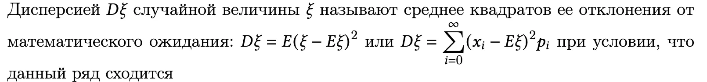
-
- Формулы для вычисления дисперсии.


-
- Дисперсия нормально распределённых случайных величин.
-
- Моменты высшего порядка.

-
- Нормальное (Гауссовское) распределение.


-
- Нормальная кривая.

-
- Вероятность попадания в заданный интервал нормальной случайной величины
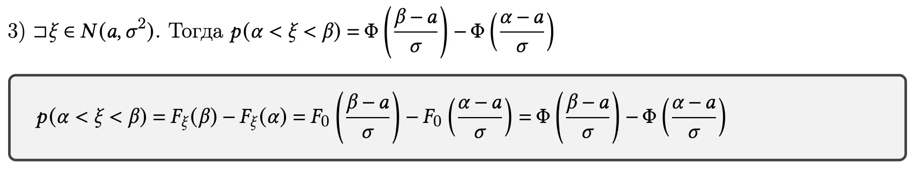
-
- Вычисление вероятности заданного отклонения.

-
- Правило трех сигм 🤫

-
- Функции от случайных величин
-
- Система случайных величин. Многомерные законы распределения.
-
- Независимость системы случайных величин.


-
- Свертка распределения.
-
- Систему двух случайных величин. Вероятность попадания случайной точки в прямоугольник.

-
- Двумерная плотность распределения.
-
- Условные законы распределения системы случайных величин.


-
- Условное математическое ожидание. Функция регрессий.
-
- Линейная регрессия. Прямые линии среднеквадратичной регрессии. Теорема.
-
- Ковариация. Определение. Теорема 1 о ковариации. Замечание 1 и 2.


-
- Теорема 2 о ковариации.
-
- Коэффициент корреляции. Свойства коэффициента корреляции.

подробнее из конспекта:


-
- Пример, из которого следует, что не коррелированные случайные величины не обязательно являются независимыми.
-
- Неравенство Чебышева.

-
- Практическое применение неравенства Чебышева.
-
- Закон больших чисел. Теорема Маркова и её аналоги.


-
- Центральная предельная теорема (формулировки двух теорем) и ее смысл.

подробнее:


из другого конспекта:

-
- Пример о плотности распределения суммы независимых случайных величин и его смысл.
Есть к теореме приводилось доказательство - учим, если нет, то не обязательно, спрашивать не будут